사회조사분석사-1급 (2019-09-21 기출문제)
1과목: 고급조사방법론 I
1. 조사보고서의 일반적인 작성지침과 가장거리가 먼 것은?
- 조사연구의 목적과 방법을 분명히 기술한다.
- 자료의 수집과 처리방법 등을 정확하고 분명하게 제시한다.
- 조사결과를 해석하고 제시할 때 존 보사의 한계와 문제점 등을 논의해서는 안 된다.
- 조사연구에 관련된 참고문헌과 선행연구들을 빠짐없이 분명하게 제시한다.
(정답률: 알수없음)

2. 질문항목의 순서를 결정하는 방법으로 틀린 것은?
- 응답자에게 민감한 질문(연령, 학력, 직업, 소득 등)은 가능한 한 나중에 해야 한다.
- 첫 번째 질문은 가능한 한 쉽게 응답할 수 있고 흥미를 유발할 수 있는 것이어야 한다.
- 앞의 질문이 다음 질문 내용에 영향을 미칠 경우 가능한 한 함께 배치하는 것이 필요하다.
- 문항이 담고 있는 내용의 범위가 넓은 것에서부터 점차 좁아지도록 문항을 배열하는 것이 좋다.
(정답률: 알수없음)
3. 가설을 그 목적에 따라 구분할 때 설명적 가설에 관한 설명으로 옳은 것은?
- 어떠한 사실을 묘사하기 위한 가설이다.
- 당위적 진술의 타당성을 말하는 가설이다.
- 현상의 발생빈도를 묘사하기 위한 가설이다.
- 변수들 간의 인과관계를 표현하는 가설이다.
(정답률: 알수없음)
4. 관찰법 (observation method)의 분류기준에 관한 설명과 가장 거리가 먼 것은?
- 관찰이 일어나는 상황이 인공적인지 여부에 따라 ‘자연적/인위적 관찰’로 나누어진다.
- 피관찰자가 관찰사실을 알고 있는지 여부에 따라 ‘공개적/비공개적 관찰’로 나누어진다.
- 관찰시기가 행동발생과 일치하는지 여부에 따라 ‘체계적/비체계적관찰’로 나누어진다.
- 관찰 주체 또는 도구가 무엇인지에 따라 ‘인간의 직접적/기계를 이용한 관찰’로 나누어진다.
(정답률: 알수없음)
5. 면접조사와 비교한 우편 설문조사의 특정으로 들린 것은?
- 설문구성이 제한적이다
- 심층규명 (probing)이 어렵다.
- 응답자에 대한 접근성이 낮다.
- 응답자에 대한 통제가 어렵다.
(정답률: 알수없음)
6. 과학적 연구의 논리체계에 대한 설명으로 틀린 것은?
- 귀납법은 이론에서부터 출발한다.
- 연역법은 일반적 사실에서 특수 사실을 도출한다.
- 귀납법은 관찰을 통해 일정 패턴을 발견하고 잠정적 결론을 내리는 것이다.
- 연역법은 경험적으로 증명되지 않더라도 논리적으로 추론할 수 있다.
(정답률: 알수없음)
7. 다음 중 가설의 평가기준과 가장 거리가 먼 것은?
- 가설은 논리적으로 간결하여야 한다.
- 가설은 경험적으로 검증할 수 있어야 한다.
- 가설검증결과는 가능한 한 광범위하게 적용할 수 있어야 한다.
- 동일 연구 분야의 다른 가설이나 이론과 연관이 없어야 한다.
(정답률: 알수없음)
8. 코호트 조사(cohort study)에 대한 설명으로 틀린 것은?
- 코호트 조사는 종단조사이다.
- 코호트 조사의 모집단은 변할 수 있다.
- 조사시점마다 샘플로 선정된 조사대상은 변할 수 있다.
- 코호트란 특정 시기에 시점에 태어났거나 동일 시점에 특정한 사건을 경험한 사람을 일컫는 말이다.
(정답률: 알수없음)
9. 다음 중 우편조사를 위한 질문지의 조사안내문에 포함해야 할 내용과 가장 거리가 먼 것은?
- 조사 실시 기관명
- 연구자의 연락처
- 응답에 대한 비밀유지
- 표본의 규모와 응답자의 범위
(정답률: 알수없음)
10. 양적 연구와 질적 연구를 통합한 혼합연구방법 (mixed method)에 관한 설명으로 틀린 것은?
- 다양한 패러다임을 수용할 수 있어야 한다.
- 질적 연구결과에서 양적 연구가 시작될 수 없다.
- 질적 연구결과와 양적 연구결과는 상반될 수 있다.
- 주제에 따라 두 가지 연구방법의 비중은 상이할 수 있다.
(정답률: 알수없음)
11. 과학적 조사에 관한 설명과 가장 거리가 먼 것은?
- 연구결과에 대해 잠정적이다.
- 인과관계의 규명을 추구한다.
- 조사자의 규범적 판단에 의거한다.
- 일정한 규칙과 절차를 통해 이루어진다.
(정답률: 알수없음)
12. 다음과 같이 질문에 대한 대답의 강도를 요구하는 질문유형은?
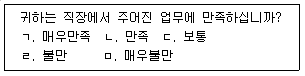
- 평정식 (rating) 질문
- 찬부식 (dichotomous) 질문
- 서열식 (ranking) 질문
- 다항선택식 (multiple choice) 질문
(정답률: 알수없음)
13. 실험에서 X( 독립변인)의 실험조작이 Y( 종속변인)에 변화 때문에 일어난 것인가를 측정하는 척도는?
- 신뢰도
- 예측빈도
- 내적 타당도
- 외적 타당도
(정답률: 알수없음)
14. Campbell이 제시한 실험조사의 내적 타당도를 저하시킬 수 있는 요인이 아닌 것은?
- 통계적 회귀
- 피험자 선택의 편견
- 실험자 자체에서 일어나는 성장적 변이과정
- 실험도중 여러 가지 이유로 피험자 수가 감소되는 문제
(정답률: 알수없음)
15. 자료에 관한 설명으로 옳은 것은?
- 1차 자료는 도서관 자료, 연구문헌자료 등을 통해 수집된다.
- 의사소통방법과 관찰법은 대표적인 2차 자료 수집 방법에 해당한다.
- 1차 자료는 2차 자료에 비해 인력과 시간, 비용이 절감된다는 장점이 있다.
- 2차 자료는 당면한 조사문제 해결에 적합한 정보를 충분히 제공하지 못할 수 있다.
(정답률: 알수없음)
16. 횡단 연구 (cross - sectional study)에 대한 설명으로 틀린 것은?
- 한 번의 조사로 끝나는 표본 조사가 대표적이다.
- 이미 존재하는 각 집단의 차이를 주로 분석한다.
- 시간적 선후가 없으므로 어떤 경우의 인과관계 방향도 설정할 수 없다.
- 변수에 대한 통제는 자료수집 단계에서 뿐만 아니라, 자료수집 후 분석단계에서도 가능하다.
(정답률: 알수없음)
17. 탐색적 조사(exploratory research) 에 대한 설명으로 가장 적합한 것은?
- 현상에 관한 기술이 주 목적이다.
- 질문지 작성 후 질문지를 검토하기 위해 실시하는 조사이다.
- 사실 간의 인과관계를 규명하고자 할 때 사용하는 조사이다.
- 사전지식이 부족한 경우 본 조사에 포함될 내용을 얻기 위해 실시하는 조사이다.
(정답률: 알수없음)
18. 통제 집 단 사후측정 설 계 (posttest- only control group design) 를 이용하여 교정프로그램의 효과를 측정하기로 하였다. 그러나 여건이 허락지 않아 무작위 표본선정과정을 생략하였다면 다음 중 어떤 설계와 가까운가?
- 단일 사례연구 (one shot study)
- 집단비교설계 (static-group comparison)
- 사후실험설계 (ex-post facto research design)
- 단일집단 사전사후측정설계 (one group pretest-posttest design)
(정답률: 알수없음)
19. 질문지의 초안이 작성된 후 사전검사(pre-test)를 시행하는 이유와 가장 거리가 먼 것은?
- 설문에 필요한 소요시간을 확인한다.
- 부적절한 설문문항이 있는지 파악한다.
- 설문에 이해하기 어려운 부분이 있는지 확인한다
- 응답자에게 설문조사 전에 중요한 정보를 제공한다.
(정답률: 알수없음)
20. 다음 중 종단 연구의 유형과 가장 거리가 먼 것은?
- 경향연구
- 패널연구
- 동류집단연구
- 정태적 집단비교연구
(정답률: 알수없음)
21. 친복지적 가치에 동의하는 사람들의 비율을 복지체제의 발전정도를 나타내는 지표로 사용할 때 발생하는 오류는?
- 환원주의적 오류
- 생태학적 오류
- 통계학적 오류
- 비체계적 오류
(정답률: 알수없음)
22. 질적 연구의 내용과 가장 거리가 먼 것은?
- 면접녹취록을 분석하여 근거 이론을 형성하는 것
- 연구자의 관찰기록에서 주요한 맥락을 파악하는 것
- 단일사례연구에서 조사대상자의 행동빈도를 측정하는 것
- 설문조사의 자유웅답에 대한 응답자의 주관적인 생각을 해석하는 것
(정답률: 알수없음)
23. 질적 연구 (qualitative research)의 일반적 특성으로 옳은 것은?
- 강제된 측정과 통제된 측정을 이용한다.
- 사회현상의 사실이나 원인들을 탐구하는 논리실증주의의 입장을 취한다.
- 실증적 자료의 분석을 통해 가설검증을 시도할 뿐만 아니라 연역적 추론을 추구한다.
- 행위자 자신의 준거의 틀에 입각하여 인간의 행태를 이해하는데 관심을 갖는 현상학적 입장을 취한다.
(정답률: 알수없음)
24. 표준화된 면접의 기법에 대한 설명으로 틀린 것은?
- 응답자들에게 동일한 응답환경을 제공한다.
- 개방형 질문에서만 캐묻기(probing)를 사용하고 폐쇄형 질문에서는 캐묻기를 사용하지 않는다.
- 응답자가 개방형 질문에서 제공한 응답을 충실히 기록한다.
- 면접자는 면접 전 응답자에게 설문조사를 소개하고, 응답자가 무엇을 해야 하는가를 설명한다.
(정답률: 알수없음)
25. 다용 사례에 해당하는 연구의 유형은?
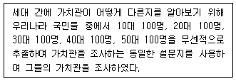
- 횡단연구
- 종단연구
- 추세연구
- 코호트연구
(정답률: 알수없음)
26. 질문지 작성에 관한 설명으로 틀린 것은?
- 폐쇄형 질문의 응답범주는 포괄적 (exhaustive)이어야 한다.
- 응답자의 이해능력을 고려하여 문항이 작성되어야 한다
- 이중질문 (double-barreled question)은 배제되어야 한다
- 폐쇄형 질문의 응답범주는 상호배타적 (mutually exclusive)이지 않아야 한다.
(정답률: 알수없음)
27. 관찰을 통한 자료수집 시 지각과정에서 나타나는 오류를 감소하기 위한 방안을 모두 고른 것은?
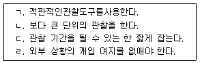
- ㄱ, ㄴ, ㄷ
- ㄱ, ㄷ, ㄹ
- ㄴ, ㄹ
- ㄱ, ㄴ, ㄷ, ㄹ
(정답률: 알수없음)
28. 조사윤리를 준수하기 위한 활동과 가장 거리가 먼 것은?
- 조사 참여자의 익명성을 보장하였다.
- 조사 참여를 통해 받을 혜택을 조사 후에 알려주었다.
- 정신장애인을 대상으로 한 연구에서 연구대상과 보호자로부터 동의를 구했다.
- 조사 과정 중 본인이 원하면 언제라도 중단할 수 있음을 알려주었다.
(정답률: 알수없음)
29. 내용분석의 장점과 가장 거리가 먼 것은?
- 연구대상의 반응성 (reactivity)문제를 해결하는데 도움이 된다.
- 주로 단기적 과정에 국한된 자료를 대상으로 한다.
- 면접설문조사에 비하여 시간과 돈이 적게 든다.
- 설문조사나 현지조사 등에 비해 재조사를 쉽게 할 수 있다.
(정답률: 알수없음)
30. 연구자가 검정요인 (test factor) 을 연구에 도입하는 가장 큰 이유는?
- 인과성의 확인
- 측정의 타당도 향상
- 측정의 신뢰도 향상
- 일반화 가능성의 증대
(정답률: 알수없음)
2과목: 고급조사방법론 II
31. 여론조사에서 조사기관이 정상적으로 수행할 수 있는 능력 이상으로 대규모의 조사를 하면 모수 추정에 있어 실패하는 경우가 있다. 이에 대한 설명으로 옳지 않은 것은?
- 실제로 여론조사에서 그 크기를 추정할 수 있는 오차는 표본오차뿐이다.
- 비표본오차는 정확하게 추정하기가 어렵고 표본오차보다 훨씬 클 수도 있다.
- 표본수를 증가시키면 비표본오차는 줄어 든다.
- 조사기관의 역량에 맞는 규모의 조사를 수행하는 것이 좋다.
(정답률: 알수없음)
32. 거트만척도에서 응답자의 응답이 이상적인 패턴에 얼마나 가까운지를 측정하는 것은?
- 스캘로그램
- 재생계수
- 단일차원계수
- 최소오차계수
(정답률: 알수없음)
33. 척도의 신뢰성을 파악하는 방법이 아닌 것은?
- 측정점수를 몇 가지 다른 기준과 비교하여 일치되는 정도를 측정한다.
- 여러 평가자들을 통해 얻은 측정결과들 간의 일치도를 비교한다.
- 한 측정도구의 전체문항들을 반씩 나누어 두 부분 간의 상관성을 측정한다.
- 하나의 척도를 동일인에 대하여 두 번 이상 반복하여 측정한다.
(정답률: 알수없음)
34. K고등학교의 학생 명단에서 뽑은 학생 100명을 대상으로 언어사용실태를 조사하였다 그런데 실제 조사에서는 해당 학생의 담임 선생님에 대한 면접을 통해서 조사가 이루어졌다. 이 연구에서 표집단위 (A), 관찰단위 (B), 표집틀 (C)은 각각 무엇인가?
- A: 학생, B: 학생, C: 학생 명단
- A: 학생, B: 담임 선생님, C: 학생 명단
- A: 담임 선생님, B: 학생, C: 학생
- A: 담임 선생님, B: 학생 명단, C: 학생
(정답률: 알수없음)
35. 조사 대상이 되는 소수의 응답자들을 표집한 후 그 응답자들을 활용하여 유사한 속성의 대상을 소개 받아 정보를 표집하는 것은?
- 유의 표집 (purpose sampling)
- 연속표집 (sequential sampling)
- 눈덩이 표집 (snowball sampling)
- 단순무작위표집 (simple random sampling)
(정답률: 알수없음)
36. 자료의 결측치를 처리하는 방법 중 표본의 수가 많거나, 상대적으로 적은 수의 결측치가 존재하고 변수들 사이의 연관성이 높지 않을 경우에 가장 적합한 방법은?
- 중간값으로 대체
- 임퓨테이션 방법
- 응답자 제거
- 결측치 제거
(정답률: 알수없음)
37. 다음 중 비율측정이라고 볼 수 없는 것은?
- 나이(세)
- 지능지수 (IQ)
- 소득(원)
- 신장(키)
(정답률: 알수없음)
38. 층화표본추출방법과 군집표본추출방법에 대한 설명으로 옳지 않은 것은?
- 두 가지 표본추출방법 모두 모집단을 소집단으로 세분화한다.
- 군집표본추출방법에서 는 소집단이 모집단을 잘 대표해야 한다.
- 층화표본추출방법은 비례층화추출방법과 불비례층화추출방법으로 구분된다.
- 군집표본추출방법은 집단 간의 특성은 이질적이고 집단 내의 특성이 동질적일 때 가장 이상적이다.
(정답률: 알수없음)
39. 다음 중 확률적 표본추출을 사용하는 표집방법들로만 구성된 것은?
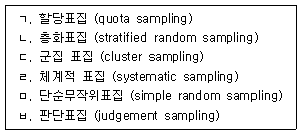
- ㄱ, ㄴ, ㅁ
- ㄴ, ㄷ, ㄹ
- ㄷ, ㅁ, ㅂ
- ㄹ, ㅁ, ㅂ
(정답률: 알수없음)
40. 자료수집적 측면에서 척도를 구분할 때 양적판단법 (quantitative judgment method)에 해당하지 않는 것은?
- 쌍대비교법 (paired comparison)
- 비율분할법 (fractionation method)
- 직접 판단법 (direct judgment method)
- 고정총합척도법 (constant sum method)
(정답률: 알수없음)
41. 측정의 타당도와 신뢰도에 관한 내용 중 옳지 않은 것은?
- 측정도구는 측정의 신뢰도와 타당도 모두에 영향을 미친다.
- 측정 항목의 모호성을 제거하고, 측정 항목의 수를 늘리면 타당도가 높아진다.
- 상표충성도를 측정해야 하는데 상표선호도를 측정한 경우 측정의 타당도에 문제가 있다.
- 웅답자의 심리적 상태에 따라 정치성향이 다르게 측정되는 경우는 측정의 신뢰도에 문제가 있다.
(정답률: 알수없음)
42. 측정 시 발생하는 오차의 원인과 가장 거리가 먼 것은?
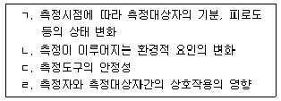
- ㄱ
- ㄴ
- ㄷ
- ㄹ
(정답률: 알수없음)
43. 다음과 같은 표본추출과정을 특징으로 하는 표본추출방법은?
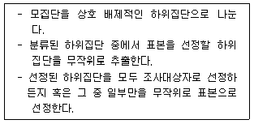
- 군집표본추출방법
- 층화표본추출방법
- 계통표본추출방법
- 단순무작위표본추출방법
(정답률: 알수없음)
44. 공무원 채용시험의 타당성을 알아보기 위하여 채용시험성적과 채용 후 근무성적을 비교한 결과 양자 간의 상관계수가 높게 나타났다. 이에 대한 설명이 옳은 것은?
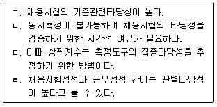
- ㄱ, ㄴ
- ㄱ, ㄷ
- ㄴ, ㄷ
- ㄴ, ㄹ
(정답률: 알수없음)
45. 변수를 측정하는 방법에 대한 설명으로 옳은 것은?
- 명목척도는 양적 측정이다.
- 등간척도는 서열의 간격이 균등해야 한다.
- 서열척도는 등간의 간격을 균등하게 조작시키는 방법이다.
- 비율척도는 명목, 서열, 등간측정이 구비될 필요가 없다.
(정답률: 알수없음)
46. 불비례층화표본추출 (disproportionate stratified sampling)이 적합한 경우는?
- 대규모 조사 시 다단계 표본추출이 필요할 때
- 층화된 집단들을 비슷한 수의 표본들로 비교하고 싶을 때
- 조사자가 조사 목적에 적합하다고 판단하는 대상을 선택하여 선별하고자 할 때
- 조사 대상이 표본으로 추출될 확률이 알려져 있지 않을 때
(정답률: 알수없음)
47. 신뢰성을 높일 수 있는 방법이 아닌 것은?
- 신뢰성이 있다고 인정된 측정도구를 이용한다.
- 조사자의 면접방식과 태도는 일관성을 유지해야 한다.
- 조사 대상자가 잘 모르거나 전혀 관심이 없는 내용에 대한 측정은 하지 않는다.
- 응답자의 집중력을 저해하지 않기 위해 동일하거나 유사한 질문은 하지 않는다.
(정답률: 알수없음)
48. 개인의 사회경제적 지위를 측정하기 위해 직업, 소득, 교육 등을 사용하여 각 측정치들의 상관계수를 통해서 타당성을 평가하는 것은?
- 표면타당성 (face validity)
- 내용타당성 (content validity)
- 개념 타당성 (construct validity)
- 기준관련타당성 (criterion-related validity)
(정답률: 알수없음)
49. 측정도구 자체가 측정하고자 하는 속성이나 개념을 얼마나 대표할 수 있는지를 평가하는 것은?
- 내용타당성 (content validity)
- 집중타당성 (convergent validity)
- 판별타당성 (discriminant validity)
- 기준관련타당성 (criterion-related validity)
(정답률: 알수없음)
50. 다음은 무엇에 관한 설명인가?
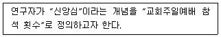
- 지표화
- 범주화
- 개념적 정의
- 조작적 정의
(정답률: 알수없음)
51. 다음과 같이 복지관 이용 동기를 측정하였다면 이는 어떤 수준의 측정인가?
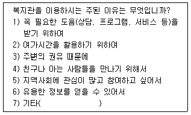
- 명목수준
- 서열수준
- 등간수준
- 비율수준
(정답률: 알수없음)
52. 측정의 신뢰도에 대한 설명으로 틀린 것은?
- 안정성, 일관성, 의존가능성 등으로 표현될 수 있는 개념이다.
- 반복 측정했을 때 일관성 있는 결과를 얻는 것을 의미한다.
- 어떤 조사결과가 부정확한 측정 자료에서 우연히 발견된 것이 아니라는 확신을 줄 수 있다.
- 연구결과와 그 해석을 위한 필요조건일 뿐 아니라 충분조건에 해당한다.
(정답률: 알수없음)
53. 측정오차에 관한 설명으로 옳지 않은 것은?
- 측정오차에는 무작위와 체계적 오차가 있다.
- 무작위 오차란 우연히 발생하는 오차이며 신뢰도와 관련된 오차이다.
- 체계적 오차란 편견이 개입된 경우로서 타당도와 관련된 오차이다.
- 행동과 연결되지 않는 바람직한 응답만 하려는 경우는 무작위 오차에 해당된다.
(정답률: 알수없음)
54. 불포함 오류 (noncoverage error)에 관한 설명으로 가장 적합한 것은?
- 표본에 적합한 표집틀을 사용하지 결과로 일어나는 오차이다.
- 목표모집단에는 있지만 표집틀에는 없는 표본 요소들로 인해 일어나는 오차이다.
- 표집틀에는 있지만 목표모집단에는 없는 표본 요소들로 인해 일어나는 오차이다.
- 표본에 적합한 목표모집단을 사용하지 못한 결과로 일어나는 오차이다.
(정답률: 알수없음)
55. 다음 중 코드북 (code book) 에 필수적으로 포함되어야 할 내용이 아닌 것은?
- 변수이름
- 변수정의
- 변수의 측정수준
- 데이터에서 변수의 위치
(정답률: 알수없음)
56. 개념적 정의와 조작적 정의에 관한 설명으로 옳지 않은 것은?
- 개념적 정의는 추상적 수준의 정의이다.
- 조작적 정의는 인위적이기 때문에 가능한한 피해야 한다.
- 개념적 정의와 조작적 정의간의 불일치는 타당도의 문제이다.
- 조작적 정의는 측정을 위해서 불가피하다.
(정답률: 알수없음)
57. 표본조사 (sample survey)에 대한 설명으로 옳지 앓은 것은?
- 전수조사가 불가능한 경우에 유용하게 활용된다.
- 비용·시간 등이 한정적일 때 전수조사보다 선호된다.
- 센서스(census) 조사의 경우 표본조사가 전수조사 보다 적합하다.
- 표본조사를 실시할 때는 신뢰성을 위해 표본의 정확성을 확보해야 한다.
(정답률: 알수없음)
58. 학생들의 성적을 ‘A, B, C, D’ 또는 ‘수·우·미·양·가’와 같이 몇 개의 단계로 구분해서 평가하는 척도는?
- 평정척도
- 서스톤척도
- 거트만 척도
- 보가더스척도
(정답률: 알수없음)
59. 할당표본추출법 (quota sampling)에 대한 설명과 가장 거리가 먼 것은?
- 최종 단계의 표본추출방식을 제외한다면 전체적으로는 층화표본추출법과 유사하다.
- 조사 주제와 관련하여 모집단의 동질성이 크면 클수록 그 효과가 극대화된다.
- 할당량 설정 후 표본 구성요소의 추출에서 조사원에 의한 편견이 개입될 가능성이 있다.
- 최종 단계에서의 표본이 확률적으로 이루어지지 않으므로 비확률표본추출법으로 보아야 한다.
(정답률: 알수없음)
60. 설문의 측정 방식을 다음과 같이 만들었다면, 어떤 척도를 사용한 것인가?
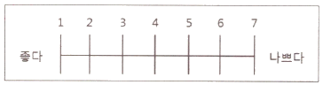
- 리커트 척도
- 서스톤V 척도
- 어의 차이 척도
- Q-sort technique
(정답률: 알수없음)
3과목: 고급통계처리및분석
61. 다음 분산분석표에 대응하는 통계적 모형으로 옳은 것은?
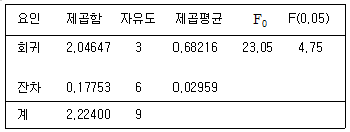
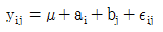
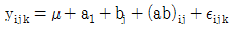
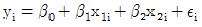
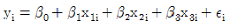
(정답률: 알수없음)
62. 확률화 블록계획법 (Randomized block design) 으로 실험 한 어 떤 자료의 분산분석 표의 일부가 다음과 같다. C 와 D의 값을 합하면 얼마인가?
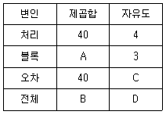
- 15
- 16
- 31
- 32
(정답률: 알수없음)
63. 임의표본 X1, ……, Xn(n < 30)이 모평균 μ와 표준편차 σ가 알려져 있지 않는 정규모집단에서 추출되었을 때 모평균이 μ0인지를 검정하고자 한다. 가설을 검정하기 위한 검정통계량과 분포로 옳은 것은? (단, Z는 표준정규확률변수이며, tn은자유도가 n인 t분포를 의미 한다.)
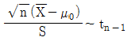
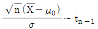
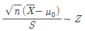
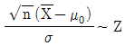
(정답률: 알수없음)
64. 연속확률분포를 가지는 모집단으로부터의 랜덤 샘플 X1,X2,...,Xn에 대하여 중앙값 θ에 대한 가설 H0 : θ = θ0 vs H1 : θ ≠ θ0을 검정하기 위한 통계량 S를 θ0보다 큰 자료의 수라할 때, 귀무가설(H0)이 참일 때 S의 확률분포는?
- N (0, 1)
- N(n/2, n/4)
- B (n, 1/2)
- B (n, 1/4)
(정답률: 알수없음)
65. 30개의 자료에 대한 설명변수를 4개 사용한 중회귀모형
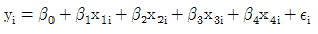
, i = 1, 2, ... , 30 에서 잔차변동(SSE) 의 지유도는?- 4
- 5
- 25
- 26
(정답률: 알수없음)
66. 어떤 자료의 판별분석을 통해 얻어진 선형판별함수가 Z=3x-2x2+10 일 때, 자료 (9, 5)의 판별득점은?
- 7
- 10
- 17
- 27
(정답률: 알수없음)
67. 다음 중 요인분석 (Factor analysis) 과 관련이 없는 것은?
- 정준적재 (canonical loading)
- 공통요인 (common factor)
- 헤이우드 상황 (Heywood case)
- 공통성 (communality)
(정답률: 알수없음)
68. 다음 표는 4 개의 처리에 대하여 동일한 반복수로 완전확률화계획법(completely randomized design)으로 얻어진 자료에 대한 분산분석표의 일부이다. 이 때 세 처리에 대한 비교 (contrast)
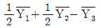
의 표준오차를 구하면?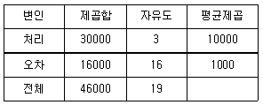
- 10√2
- 10√3
- 10√4
- 10√5
(정답률: 알수없음)
69. 요인분석 (Factor analysis)에서 공통성 (communality)에 대한 설명으로 옳은 것은?
- 변수들의 분산의 합은 공통성의 합과 같다.
- 공통성은 유일성 (uniqueness)이라고도 한다.
- 변수의 분산 중 공통인자로 설명되는 부분을 의미한다.
- 공통성은 원 변수와 공통변수간의 상관관계를 나타낸다.
(정답률: 알수없음)
70. 군집 분석 (cluster analysis)에서 비 유사성 (dissimilarity)에 대한 측도 중 변수들 간의 상관관계를 고려한 통계적 거리를 나타내는 측도는?
- 유클리디안 (Euclidean) 거리
- 민코우스키 (Minkowski) 거리
- 시티블록 (city block) 거리
- 마할라노비스 (Mahalanobis) 거리
(정답률: 알수없음)
71. 판별분석에서는 판별함수를 구한 후 판별함수값(판별점수)을 이용하여 각 개체를 분류한다. 이 때 사용되는 분류방법에 대한 설명으로 옳은 것은?
- 각 개체의 판별함수값이 각 집단의 판별함수 최댓값에 가까운 쪽으로 개체를 분류한다.
- 각 개체의 판별함수값이 각 집단의 판별함수 최솟값에 가까운 쪽으로 개체를 분류한다.
- 각 개체의 판별함수값이 각 집단의 판별함수값의 중심점(평균 판별점수)에 가까운 쪽으로 개체를 분류한다.
- 각 개체의 판별함수값이 각 집단의 판별함수값의 중심점(평균 판별점수)에서 먼 쪽으로 개체를 분류한다.
(정답률: 알수없음)
72. 두 설명변수 x1, x2를 사용한 회귀 추정식이
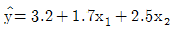
으로 얻어졌다. 다음 중 옳은 것은?- 회귀계수의 값 1.7 의 의미는 x2의 값에 상관없이 설명변수 x1의 값을 1단위 증가시 킬 때 반응변수 x1의 값은 1.7 단위 증가할 것임을 나타낸다.
- 회귀계수의 값 2.5의 의미는 설명변수 x1을 고정시킨 상태에서 x2의 값을 1단위 증가시키면 반응변수 y의 값은 2.5 단위 증가할 것임을 나타낸다.
- 설명변수 x1만을 이용하여 회귀모형을 적합하였을 때 회귀추정식의 기울기는 1.7일 것이다.
- 설명변수 x2만을 이용하여 회귀모형을 적합하였을 때 회귀추정식은
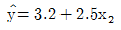
일 것이다.
(정답률: 알수없음)
73. 실험계획법의 한 방법인 완전확률화계획법(completely randomized design)에서 k개 의 처리(treatment)를 고려할 때, 이 k개의 처리 사이에 존재하는 직교비교 (orthogonal contrast)는 몇 개인가?
- k
- k-l
- k+l
- k-2
(정답률: 알수없음)
74. 4 개의 변수로 이루어진 다변량 자료의 상관계수의 행렬이 다음과 같다. 위 상관계수 행렬의 고유값 (eigenvalue) 이 2.00, 1.79, 0.19, 0.02 일 때, 자료의 총 분산(각 변수의 분산의 합) 중 첫 번째 인자에 의하여 설명될 수 있는 비율은?
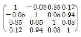
- 20%
- 40%
- 50%
- 70%
(정답률: 알수없음)
75. 연구자가 관찰벡터를 두 모집단 π1과 π2 중에서 어디에 분류시킬 것인지 연구하고 있다. 두 모집단에 관련된 밀도함수를 각각 f1(x), f2(x)라 하고, 잘못 분류하여 생기는 비용이 c(2|1)=40원, c(1|2)=70원임을 알고 있다고 한다. 그리고 모든 관찰대상물 중의 60%가 π1에 속한다는 것을 알고 있다. 이제 새로 관찰된 x0에서 밀도함수값이 f1(x0=0.2, f2(x0)=0.6이라고 할 때, 이 개체가 π2에서 나왔을 사후확률은?
- 0.33
- 0.55
- 0.67
- 0.84
(정답률: 알수없음)
76. 3개의 자동차 회사에서 만들어 내는 자동차의 리터당 평균주행 거리를 비교하기 위하여 실험을 한 결과는 다음과 같다. 분산분석을 실시하기 위해 잔차제곱합과 처리제곱합을 구하면?
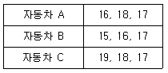
- 잔차제곱합=6, 처리제곱합=6
- 잔차제곱합=6, 처리제곱합=2
- 잔차제곱합=2, 처리제곱합=2
- 잔차제곱합=2, 처리제곱합=6
(정답률: 알수없음)
77. 다음 중 경로분석 절차와 가장 거리가 먼 것은?
- 가설에 따른 모형을 미리 설정한다
- 필요한 경우 변수를 표준화 시킨다.
- 회귀분석을 실시하여 모형을 결정한다.
- 분산분석을 통해 주요경로를 설정한다.
(정답률: 알수없음)
78. 어떤 진통에 대한 처방의 효과 비교를 위하여 대조군에 2명, 처방을 받은 처리군에 3명으로부터 진통시간을 측정하였을 경우 적절한 비교분석방법은?
- 부호검정
- 런 검정
- 윌콕슨 순위합검정
- 윌콕슨 부호순위검정
(정답률: 알수없음)
79. 회귀분석에서 결정계수 R2에 대한 설명으로 옳은 것은?
- 결정계수 R2의 범위는 상관계수의 범위와 일치한다.
- 회귀모형에 설명변수를 추가하게 되면 R2값이 증가하므로 새 모형이 이전의 모형보다 반드시 우월하게 된다.
- 결정계수 R2값이 0 에 가까울수록 회귀직선에 의한 변동이 총변동의 대부분을 설명하고 있음을 의미한다.
- 결정계수 R2은 총변동에 대한 회귀직선에 의해 설명되는 변동의 비율로 정의되는 측도이다.
(정답률: 알수없음)
80. 어느 직업군의 월 평균소득을 조사하고자 한다. 월 소득에 대한 분포는 표준편차가 100 만원인 정규분포를 따른다고 할 때 월 평균소득에 대한 95% 신뢰구간의 길이가 50 만원 이하가 되도록 하는데 필요한 최소의 표본크기는? (단, P(N(0,l) > 1.96) = 0.025 이다 )
- 16
- 62
- 96
- 128
(정답률: 알수없음)
81. 5 개의 변수에 대하여 두 대상의 관찰값이 주어진 표와 같다. 이 때 군집분석의 거리 측정방식 중에서 2차의 민코우스키 거리 (Minkowski distance)를 이용하여 대상 i와 대상 k의 거리를 구하면?
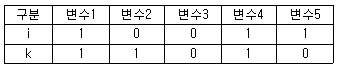
- √2
- 2
- √6
- 4
(정답률: 알수없음)
82. X1, X2, …, Xn이 정규분포 N(θ1, θ2), -∞<θ1<∞, 0<θ2<∞의 랜덤표본일 때, θ1과 θ2의 적률추정량(method of moment estimator)으로 옳은 것은?
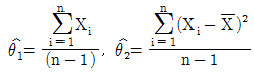
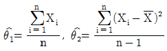
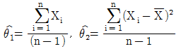
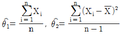
(정답률: 알수없음)
83. 이상점(outlier)이 포함된 자료에 대한 평균차이 검정에 대한 설명으로 옳은 것은?
- 비모수검정 통계에서 귀무가설이 기각되면 T-검정도 귀무가설을 기각하게 된다.
- 이상점을 더 큰 값으로 바꾸면 미모수검정 통계의 유의확률은 서로 다르게 계산된다.
- 이상점이 포함되지 않은 자료는 어떤 통계적 방법을 쓰더라도 결과는 동일하다.
- T- 검정에서 귀무가설을 기각하면 비모수검정 통계는 반드시 귀무가설이 기각된다.
(정답률: 알수없음)
84. 다음은 외생변수 X1, 내생변수 Y1, Y2를 이용한 경로모형이다. X1 이 Y2 에 미치는 직접효과, 간접효과, 총효과를 바르게 구한 것은?
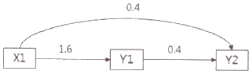
- 직접효과: 0.4, 간접효과: 1.6, 총효과: 2.0
- 직접효과: 0.4, 간접효과: 0.4, 총효과: 0.16
- 직접효과: 0.4, 간접효과: 0.4, 총효과: 0.8
- 직접효과: 0.4, 간접효과: 0.64, 총효과: 1.04
(정답률: 알수없음)
85. 다음은 단쉰회귀모형 y1=β0+βixi+ϵi (i=1,2,…, n), ϵi ~ N(0,σ2)에 대해 최소제곱추정법을 적용한 분산분석표이고,
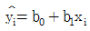
은 적합된 회귀식,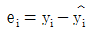
은 잔차이다. 추정 및 검정에 대한 설명으로 옳은 것은?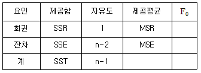
- σ2에 대한 최우추정량과 MSE는 같다.
- 최소제곱추정법과 최우추정법에 의한 (b0, b1)의 추정식은 같다.
- 회귀식의 유의성에 대한 검정통계량은
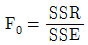
이다. 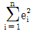
을 최소가 되게 하는 (b0, b1)을 찾는 방법을 최우추정법이라 한다.
(정답률: 알수없음)
86. 최소제곱추정법으로 단순회귀모형 y1=β0+βixi+ϵi (i=1,2,…, n)을 적합한 회귀식
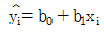
와 잔차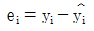
에 대한 설명으로 옳지 않은 것은? (단, ϵi ~ N(0,σ2))- (yi, ei)의 표본상관계수는 0이다.
- (xi, ei)의 표본상관계수는 0이다.
- (
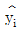
, ei)의 표본상관계수는 0이다. - 적합된 회귀직선은 (xi, yi)들의 평균 (
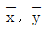
)를 통과한다.
(정답률: 알수없음)
87. Runs 검정은 일반적으로 두 종류의 결과만을 갖는 경우에 독립성의 여부를 알아보는 비모수적 검정방법이다. 어느 모집단으로부터 15명의 학생들을 표본추출하여 얻은 성별자료는 아래와 같다. 이 때 Runs 검정에 사용되는 통계량의 값은?
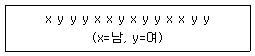
- 6
- 7
- 8
- 9
(정답률: 알수없음)
88. 귀무가설이 참일 때, 표본의 크기가 20인 경우 부호순위 검정통계량의 평균값은?
- 100
- 1⑤
- 110
- 115
(정답률: 알수없음)
89. 국회의원 후보자 A에 대한 청년층 지지율 p1과 노년층 지지율 p2의 차이 p1-p2는 6.6%로 알려져 있다. 최근 국회의원 후보자 TV토론 후, 세대별(청년층과 노년층에 대해) 500명씩을 랜덤추출하여 조사하니, 위 지지율 차이는 3.3%로 나타났다. 세대 간 지지율 차이가 줄어들었다고 할 수 있는지를 검정하기 위한 귀무가설 H0과 대립가설 H1로 옳은 것은?
- H0 : p1-p2=0.033, H1 : p1-p2>0.033
- H0 : p1-p2>0.033, H1 : p1-p2≤0.033
- H0 : p1-p2<0.066, H1 : p1-p2≥0.066
- H0 : p1-p2=0.066, H1 : p1-p2<0.066
(정답률: 알수없음)
90. A, B 두 종류의 청량음료를 8 명 의 전문가에게 교대로 맛을 보게 한 다음, 시음 결과를 점수로 나타내도록 했다. 주어진 표에는 맛의 점수와 그 차이를 나타낸 것이다. 두 청량음량의 맛에 심각한 차이가 있는지 윌콕슨 부호순위 검정(Wilcoxon signed rank test)을 실시하고자 한다. 다음 중 윌콕슨 부호순위통계량의 관측값(W+)을 바르게 구한 것은?
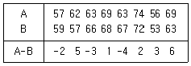
- 17
- 23
- 65.5
- 71.5
(정답률: 알수없음)
91. 표본에 관한 설명으로 옳지 않은 것은?
- 표본평균의 기댓값은 표본의 크기에 따라 달라진다.
- 신뢰도를 높이려면 신뢰구간의 범위를 늘려야 한다.
- 표본의 크기가 커질수록 표본평균은 모평균에 가까워지는 경향이 있다.
- 일반적으로 신뢰구간의 길이는 표본의 크기가 커질수록 작아진다.
(정답률: 알수없음)
92. 다음 중 다중비교(multiple comparison) 방법과 관련이 없는 것은?
- 베이즈 (Bayes)
- 튜키 (Tukey)
- 던칸 (Duncan)
- 최소유의차(Least Significant Difference)
(정답률: 알수없음)
93. 대응비교(paired comparison)에 관한 설명으로 틀린 것은?
- 분산이 동일한 경우 공통분산에 대한 추정치를 사용한다.
- 동일한 개체에 대해 두 개의 특성치를 측정한 자료에 적합하다.
- 개체 간의 독립성은 만족되나, 개체 내의 독립성은 만족되지 않는다.
- 소표본의 경우에는 정규성의 가정하에 t-검정, 대표본의 경우에는 z-검정을 수행한다.
(정답률: 알수없음)
94. 주어진 자료 X1, X2, …, Xn에 대하여 위치모수 θ에 대한 귀무가설 H0 : θ = θ0 를 검정하기 위한 부호 검정 통계량
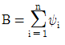
의 귀무가설하에서의 평균은? (단,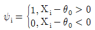
이다.)- n/4
- n/2
- n
- 2n
(정답률: 알수없음)
95. 두 확률변수 X, Y가 대응짝의 형태인 (X1, Y1), (X2, Y2), …,(Xn, Yn)으로 측정되었을 때, 두 변수의 관련성을 측정하는 척도에 관한 설명으로 옳지 않은 것은?
- 분할계수는 카이제곱통계량을 사용하여 계산한다.
- 감마(Gamma) 는 두 명목자료에 대한 연관성 척도이다.
- 스피어만 상관계수는 각 변수들의 사용하여 계산한다.
- 피어슨 상관계수는 두 변수들 간의 선형관계만을 측정할 수 있다.
(정답률: 알수없음)
96. 유권자들로부터 정당선호도라는 행변수와 투표여부라는 열변수로 분류하여 얻은 교차표이다. 분석결과에 대한 설명으로 옳지 않은 것은?
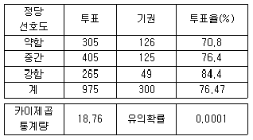
- 총 유권자의 투표율은 76.47%이다.
- 카이제곱통계량의 자유도는 2이다.
- 정당선호도에 따라 투표율이 다르다.
- 정당 선호도가 약한 투표자의 기댓값은 3⑤명보다 적다.
(정답률: 알수없음)
97. 정부정책에 대한 찬반을 알아보기 위한 여론조사에서 n명의 표본을 랜덤추출하여 조사한 결과, n명 중에서 X명이 찬성한 것으로 나타났다. 다음 설명 중 옳지 않은 것은? (단, p는 찬성하는 유권자의 모비율이다.)
- X - B(n, p)
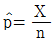
는 모비율 p에 대한 불편추정량(비편향추정량)이다.- n, p<5, n(1-p)<5이면 근사적으로
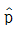
~ N(p,(1-p)/p)이다. 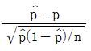
는 근사적으로 표준정규분포를 따른다.
(정답률: 알수없음)
98. 공중보건에 관한 조사에서 시각장애인의 비율을 추정하고자 한다. 만약 이 조사에서 얻어지는 결과에 대한 추정의 98% 오차한계를 5% 이내로 하려면 몇 명을 대상으로 시각장애 여부를 조사하여야 하는가? (단, z0.01 = 2.33)
- 253
- 543
- 632
- 645
(정답률: 알수없음)
99. 에 대한 분석결과가 아래와 같을 때, 이 결과에 대한 해석으로 옳지 않은 것은?
- 모든 회귀계수가 유의미하다.
- 모형의 통계적 타당성이 확보되었다.
- 결정계수는 표로부터 계산할 수 있다.
- 결정계수가 60% 보다 작아 설명력이 떨어진다.
(정답률: 알수없음)
100. 두 집단의 자료를 분석한 결과 다음 표를 얻었다. 두 집단의 분산이 같다고 가정할 때, 두 집단의 공통분산의 추정값은?
- 2.6
- 3.5
- 4.0
- 5.7
(정답률: 알수없음)